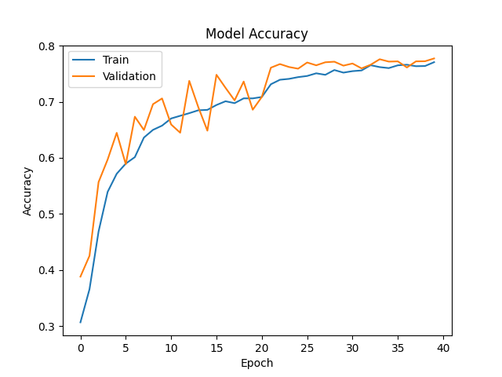
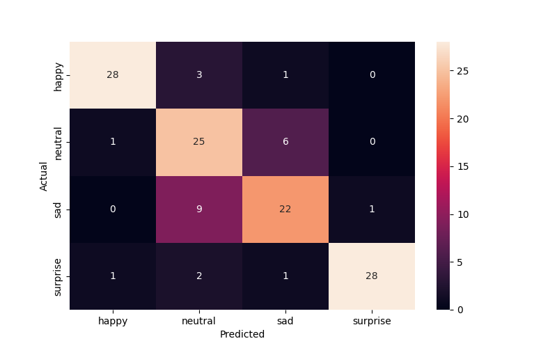
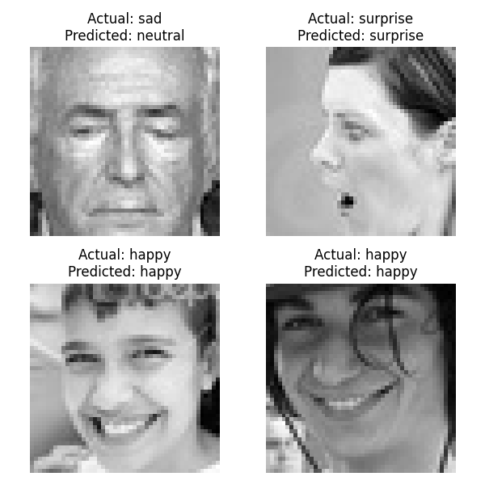

        <html>
        <head><title>Model Summary - 2024-04-10 14:08:43</title></head>
        <body>
        <h1>Model Configuration</h1>
        <pre>model:
  compile:
    learning_rate: 0.01
    optimizer: SGD
    optimizer_name: adam
  data:
    color_layers: 1
    color_mode: grayscale
    img_height: 48
    img_width: 48
    use_data_loaders: true
  layers:
  - filters: 64
    kernel_size:
    - 2
    - 2
    padding: same
    type: Conv2D
  - type: BatchNormalization
  - alpha: 0.1
    type: LeakyReLU
  - pool_size:
    - 2
    - 2
    type: MaxPooling2D
  - filters: 128
    kernel_size:
    - 2
    - 2
    padding: same
    type: Conv2D
  - type: BatchNormalization
  - alpha: 0.1
    type: LeakyReLU
  - pool_size:
    - 2
    - 2
    type: MaxPooling2D
  - filters: 256
    kernel_size:
    - 2
    - 2
    padding: same
    type: Conv2D
  - type: BatchNormalization
  - alpha: 0.1
    type: LeakyReLU
  - pool_size:
    - 2
    - 2
    type: MaxPooling2D
  - filters: 512
    kernel_size:
    - 2
    - 2
    padding: same
    type: Conv2D
  - type: BatchNormalization
  - alpha: 0.1
    type: LeakyReLU
  - pool_size:
    - 2
    - 2
    type: MaxPooling2D
  - filters: 128
    kernel_size:
    - 2
    - 2
    padding: same
    type: Conv2D
  - type: BatchNormalization
  - alpha: 0.1
    type: LeakyReLU
  - pool_size:
    - 2
    - 2
    type: MaxPooling2D
  - type: Flatten
  - activation: relu
    type: Dense
    units: 512
  - activation: relu
    type: Dense
    units: 128
  - type: Dense
    units: 64
  - type: BatchNormalization
  - type: ReLU
  - activation: softmax
    type: Dense
    units: 4
  train:
    batch_size: 16
    epochs: 40
    patience: 7
</pre>
        <h1>Model Summary</h1>
        <pre>Model: "sequential"
┏━━━━━━━━━━━━━━━━━━━━━━━━━━━━━━━━━━━━━━┳━━━━━━━━━━━━━━━━━━━━━━━━━━━━━┳━━━━━━━━━━━━━━━━━┓
┃ Layer (type)                         ┃ Output Shape                ┃         Param # ┃
┡━━━━━━━━━━━━━━━━━━━━━━━━━━━━━━━━━━━━━━╇━━━━━━━━━━━━━━━━━━━━━━━━━━━━━╇━━━━━━━━━━━━━━━━━┩
│ conv2d (Conv2D)                      │ (None, 48, 48, 64)          │             320 │
├──────────────────────────────────────┼─────────────────────────────┼─────────────────┤
│ batch_normalization                  │ (None, 48, 48, 64)          │             256 │
│ (BatchNormalization)                 │                             │                 │
├──────────────────────────────────────┼─────────────────────────────┼─────────────────┤
│ leaky_re_lu (LeakyReLU)              │ (None, 48, 48, 64)          │               0 │
├──────────────────────────────────────┼─────────────────────────────┼─────────────────┤
│ max_pooling2d (MaxPooling2D)         │ (None, 24, 24, 64)          │               0 │
├──────────────────────────────────────┼─────────────────────────────┼─────────────────┤
│ conv2d_1 (Conv2D)                    │ (None, 24, 24, 128)         │          32,896 │
├──────────────────────────────────────┼─────────────────────────────┼─────────────────┤
│ batch_normalization_1                │ (None, 24, 24, 128)         │             512 │
│ (BatchNormalization)                 │                             │                 │
├──────────────────────────────────────┼─────────────────────────────┼─────────────────┤
│ leaky_re_lu_1 (LeakyReLU)            │ (None, 24, 24, 128)         │               0 │
├──────────────────────────────────────┼─────────────────────────────┼─────────────────┤
│ max_pooling2d_1 (MaxPooling2D)       │ (None, 12, 12, 128)         │               0 │
├──────────────────────────────────────┼─────────────────────────────┼─────────────────┤
│ conv2d_2 (Conv2D)                    │ (None, 12, 12, 256)         │         131,328 │
├──────────────────────────────────────┼─────────────────────────────┼─────────────────┤
│ batch_normalization_2                │ (None, 12, 12, 256)         │           1,024 │
│ (BatchNormalization)                 │                             │                 │
├──────────────────────────────────────┼─────────────────────────────┼─────────────────┤
│ leaky_re_lu_2 (LeakyReLU)            │ (None, 12, 12, 256)         │               0 │
├──────────────────────────────────────┼─────────────────────────────┼─────────────────┤
│ max_pooling2d_2 (MaxPooling2D)       │ (None, 6, 6, 256)           │               0 │
├──────────────────────────────────────┼─────────────────────────────┼─────────────────┤
│ conv2d_3 (Conv2D)                    │ (None, 6, 6, 512)           │         524,800 │
├──────────────────────────────────────┼─────────────────────────────┼─────────────────┤
│ batch_normalization_3                │ (None, 6, 6, 512)           │           2,048 │
│ (BatchNormalization)                 │                             │                 │
├──────────────────────────────────────┼─────────────────────────────┼─────────────────┤
│ leaky_re_lu_3 (LeakyReLU)            │ (None, 6, 6, 512)           │               0 │
├──────────────────────────────────────┼─────────────────────────────┼─────────────────┤
│ max_pooling2d_3 (MaxPooling2D)       │ (None, 3, 3, 512)           │               0 │
├──────────────────────────────────────┼─────────────────────────────┼─────────────────┤
│ conv2d_4 (Conv2D)                    │ (None, 3, 3, 128)           │         262,272 │
├──────────────────────────────────────┼─────────────────────────────┼─────────────────┤
│ batch_normalization_4                │ (None, 3, 3, 128)           │             512 │
│ (BatchNormalization)                 │                             │                 │
├──────────────────────────────────────┼─────────────────────────────┼─────────────────┤
│ leaky_re_lu_4 (LeakyReLU)            │ (None, 3, 3, 128)           │               0 │
├──────────────────────────────────────┼─────────────────────────────┼─────────────────┤
│ max_pooling2d_4 (MaxPooling2D)       │ (None, 1, 1, 128)           │               0 │
├──────────────────────────────────────┼─────────────────────────────┼─────────────────┤
│ flatten (Flatten)                    │ (None, 128)                 │               0 │
├──────────────────────────────────────┼─────────────────────────────┼─────────────────┤
│ dense (Dense)                        │ (None, 512)                 │          66,048 │
├──────────────────────────────────────┼─────────────────────────────┼─────────────────┤
│ dense_1 (Dense)                      │ (None, 128)                 │          65,664 │
├──────────────────────────────────────┼─────────────────────────────┼─────────────────┤
│ dense_2 (Dense)                      │ (None, 64)                  │           8,256 │
├──────────────────────────────────────┼─────────────────────────────┼─────────────────┤
│ batch_normalization_5                │ (None, 64)                  │             256 │
│ (BatchNormalization)                 │                             │                 │
├──────────────────────────────────────┼─────────────────────────────┼─────────────────┤
│ re_lu (ReLU)                         │ (None, 64)                  │               0 │
├──────────────────────────────────────┼─────────────────────────────┼─────────────────┤
│ dense_3 (Dense)                      │ (None, 4)                   │             260 │
└──────────────────────────────────────┴─────────────────────────────┴─────────────────┘
 Total params: 1,096,452 (4.18 MB)
 Trainable params: 1,094,148 (4.17 MB)
 Non-trainable params: 2,304 (9.00 KB)
</pre>
        <h2>Test Accuracy</h2>
        <p>
1/8 ━━━━━━━━━━━━━━━━━━━━ 0s 14ms/step - accuracy: 0.8750 - loss: 0.4332
8/8 ━━━━━━━━━━━━━━━━━━━━ 0s 2ms/step - accuracy: 0.8229 - loss: 0.4904 

1/8 ━━━━━━━━━━━━━━━━━━━━ 2s 374ms/step
8/8 ━━━━━━━━━━━━━━━━━━━━ 0s 2ms/step  
</p>
        <h2>Accuracy Plot</h2>
        
        <h2>Classification Report</h2>
        <pre>              precision    recall  f1-score   support

       happy       0.93      0.88      0.90        32
     neutral       0.64      0.78      0.70        32
         sad       0.73      0.69      0.71        32
    surprise       0.97      0.88      0.92        32

    accuracy                           0.80       128
   macro avg       0.82      0.80      0.81       128
weighted avg       0.82      0.80      0.81       128

</pre>
        <h2>History</h2>
        <pre>Epoch 1: accuracy: 0.3067, loss: 1.3611, val_accuracy: 0.3882, val_loss: 1.3224, learning_rate: 0.0100
Epoch 2: accuracy: 0.3657, loss: 1.2678, val_accuracy: 0.4254, val_loss: 1.2360, learning_rate: 0.0100
Epoch 3: accuracy: 0.4687, loss: 1.1358, val_accuracy: 0.5568, val_loss: 1.0194, learning_rate: 0.0100
Epoch 4: accuracy: 0.5393, loss: 1.0213, val_accuracy: 0.5969, val_loss: 0.9266, learning_rate: 0.0100
Epoch 5: accuracy: 0.5716, loss: 0.9619, val_accuracy: 0.6446, val_loss: 0.8313, learning_rate: 0.0100
Epoch 6: accuracy: 0.5897, loss: 0.9276, val_accuracy: 0.5885, val_loss: 0.9660, learning_rate: 0.0100
Epoch 7: accuracy: 0.6012, loss: 0.9080, val_accuracy: 0.6733, val_loss: 0.7954, learning_rate: 0.0100
Epoch 8: accuracy: 0.6361, loss: 0.8703, val_accuracy: 0.6496, val_loss: 0.8009, learning_rate: 0.0100
Epoch 9: accuracy: 0.6498, loss: 0.8385, val_accuracy: 0.6956, val_loss: 0.7411, learning_rate: 0.0100
Epoch 10: accuracy: 0.6574, loss: 0.8254, val_accuracy: 0.7058, val_loss: 0.7203, learning_rate: 0.0100
Epoch 11: accuracy: 0.6701, loss: 0.8050, val_accuracy: 0.6594, val_loss: 0.8151, learning_rate: 0.0100
Epoch 12: accuracy: 0.6749, loss: 0.7870, val_accuracy: 0.6448, val_loss: 0.8955, learning_rate: 0.0100
Epoch 13: accuracy: 0.6796, loss: 0.7825, val_accuracy: 0.7372, val_loss: 0.6631, learning_rate: 0.0100
Epoch 14: accuracy: 0.6848, loss: 0.7710, val_accuracy: 0.6902, val_loss: 0.7716, learning_rate: 0.0100
Epoch 15: accuracy: 0.6855, loss: 0.7609, val_accuracy: 0.6484, val_loss: 0.8374, learning_rate: 0.0100
Epoch 16: accuracy: 0.6942, loss: 0.7507, val_accuracy: 0.7480, val_loss: 0.6317, learning_rate: 0.0100
Epoch 17: accuracy: 0.7008, loss: 0.7364, val_accuracy: 0.7247, val_loss: 0.6673, learning_rate: 0.0100
Epoch 18: accuracy: 0.6975, loss: 0.7347, val_accuracy: 0.7024, val_loss: 0.7277, learning_rate: 0.0100
Epoch 19: accuracy: 0.7060, loss: 0.7288, val_accuracy: 0.7360, val_loss: 0.6717, learning_rate: 0.0100
Epoch 20: accuracy: 0.7059, loss: 0.7263, val_accuracy: 0.6858, val_loss: 0.7628, learning_rate: 0.0100
Epoch 21: accuracy: 0.7085, loss: 0.7139, val_accuracy: 0.7085, val_loss: 0.7056, learning_rate: 0.0100
Epoch 22: accuracy: 0.7312, loss: 0.6680, val_accuracy: 0.7607, val_loss: 0.5961, learning_rate: 0.0020
Epoch 23: accuracy: 0.7392, loss: 0.6507, val_accuracy: 0.7671, val_loss: 0.5909, learning_rate: 0.0020
Epoch 24: accuracy: 0.7408, loss: 0.6416, val_accuracy: 0.7619, val_loss: 0.5919, learning_rate: 0.0020
Epoch 25: accuracy: 0.7439, loss: 0.6402, val_accuracy: 0.7589, val_loss: 0.6009, learning_rate: 0.0020
Epoch 26: accuracy: 0.7459, loss: 0.6261, val_accuracy: 0.7699, val_loss: 0.5832, learning_rate: 0.0020
Epoch 27: accuracy: 0.7507, loss: 0.6250, val_accuracy: 0.7649, val_loss: 0.5901, learning_rate: 0.0020
Epoch 28: accuracy: 0.7480, loss: 0.6251, val_accuracy: 0.7703, val_loss: 0.5846, learning_rate: 0.0020
Epoch 29: accuracy: 0.7565, loss: 0.6137, val_accuracy: 0.7713, val_loss: 0.5781, learning_rate: 0.0020
Epoch 30: accuracy: 0.7519, loss: 0.6165, val_accuracy: 0.7643, val_loss: 0.5936, learning_rate: 0.0020
Epoch 31: accuracy: 0.7545, loss: 0.6128, val_accuracy: 0.7681, val_loss: 0.5886, learning_rate: 0.0020
Epoch 32: accuracy: 0.7558, loss: 0.6089, val_accuracy: 0.7595, val_loss: 0.6138, learning_rate: 0.0020
Epoch 33: accuracy: 0.7651, loss: 0.6006, val_accuracy: 0.7659, val_loss: 0.5862, learning_rate: 0.0020
Epoch 34: accuracy: 0.7617, loss: 0.5979, val_accuracy: 0.7758, val_loss: 0.5711, learning_rate: 0.0020
Epoch 35: accuracy: 0.7599, loss: 0.5961, val_accuracy: 0.7715, val_loss: 0.5794, learning_rate: 0.0020
Epoch 36: accuracy: 0.7649, loss: 0.5967, val_accuracy: 0.7720, val_loss: 0.5922, learning_rate: 0.0020
Epoch 37: accuracy: 0.7660, loss: 0.5852, val_accuracy: 0.7611, val_loss: 0.6086, learning_rate: 0.0020
Epoch 38: accuracy: 0.7633, loss: 0.5921, val_accuracy: 0.7720, val_loss: 0.5814, learning_rate: 0.0020
Epoch 39: accuracy: 0.7637, loss: 0.5829, val_accuracy: 0.7722, val_loss: 0.5829, learning_rate: 0.0020
Epoch 40: accuracy: 0.7705, loss: 0.5776, val_accuracy: 0.7772, val_loss: 0.5689, learning_rate: 0.0004
</pre>
        <h2>Confusion Matrix</h2>
        
        <h2>Predicted Images</h2>
        
        </body>
        </html>
        